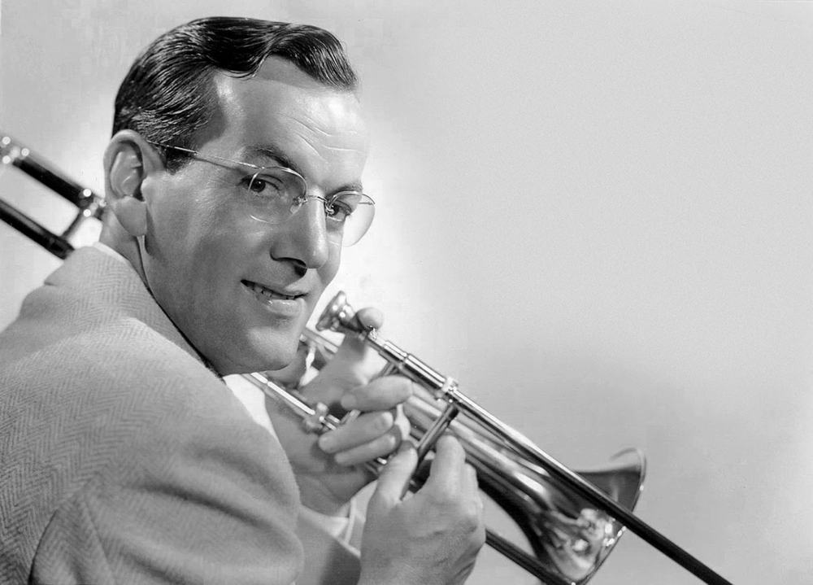
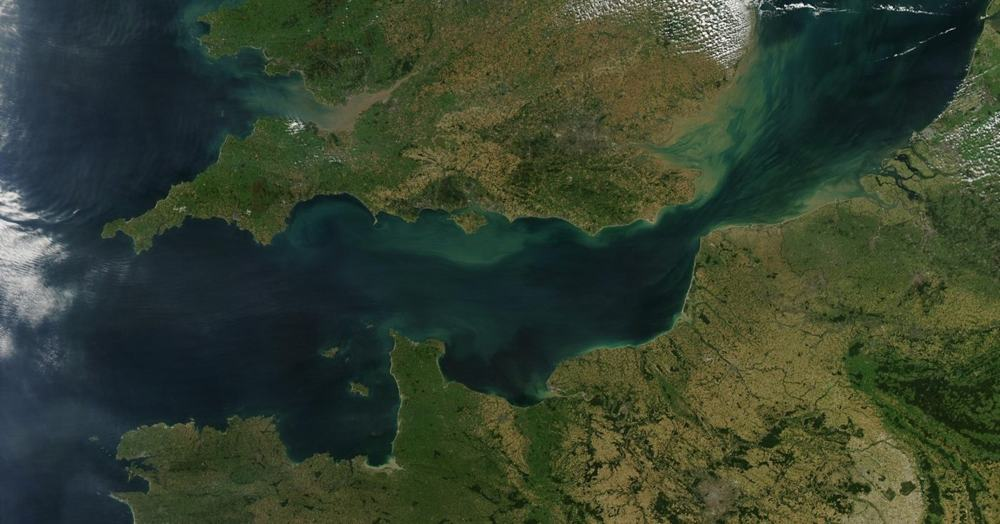

故事
一位最紅的樂團團長，搭上一架小飛機後，再也沒出現。他是 Glenn Miller，代表作是 In the Mood。二戰時，他放下事業從軍，帶著軍樂團替盟軍演出。
1944 年十二月十五日，他從英國出發，要飛去巴黎。他要去安排樂團在法國的聖誕節演出。那天天氣很差，單引擎小飛機飛進英吉利海峽上空。

之後，飛機和機上的人，都沒有再被找到。有人說是機翼結冰，也有人說是被回航轟炸機丟下的炸彈打中。到今天，還沒有一個說法被證實。下次聽到 In the Mood，想想那架消失在海峽上空的飛機。
故事後面
Glenn Miller 是三十年代末最紅的大樂團團長，In the Mood、Moonlight Serenade 都是他的招牌。
一九四二年他放下事業從軍，帶領陸軍航空隊樂團為盟軍演出、上廣播。他失蹤後，樂團繼續在巴黎演出。
關於飛機的下落有很多說法，包括被回航轟炸機丟下的炸彈擊中，但到今天都沒有找到殘骸證實。

這樣聽
聽中段管樂一次比一次小聲的段落，再突然爆出來，那是當年舞池最愛的一刻。
逐句英文
The most popular bandleader of his day boarded a small plane and was never seen again.
He was Glenn Miller, best known for In the Mood.
In World War II he left his career to enlist, leading a military band for Allied troops.
On 15 December 1944 he set off from England for Paris.
He was going ahead to arrange the band's Christmas shows in France.
The weather was bad as the single-engine plane headed out over the English Channel.
Neither the plane nor anyone aboard was ever found.
Some say ice formed on the plane; others say it was hit by bombs jettisoned by returning bombers.
To this day, no theory has been proven.
Next time you hear In the Mood, think of the plane that vanished over the Channel.
查證筆記與出處
「結冰」原文多指化油器結冰，稿裡簡化成「結冰」；兩種說法都寫「有人說」。
https://en.wikipedia.org/wiki/Glenn_Miller
https://en.wikipedia.org/wiki/Disappearance_of_Glenn_Miller
一分鐘影片版在 Instagram @jazz101tw。